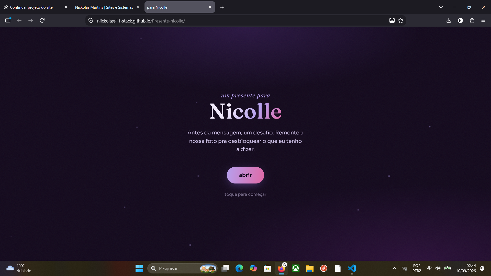
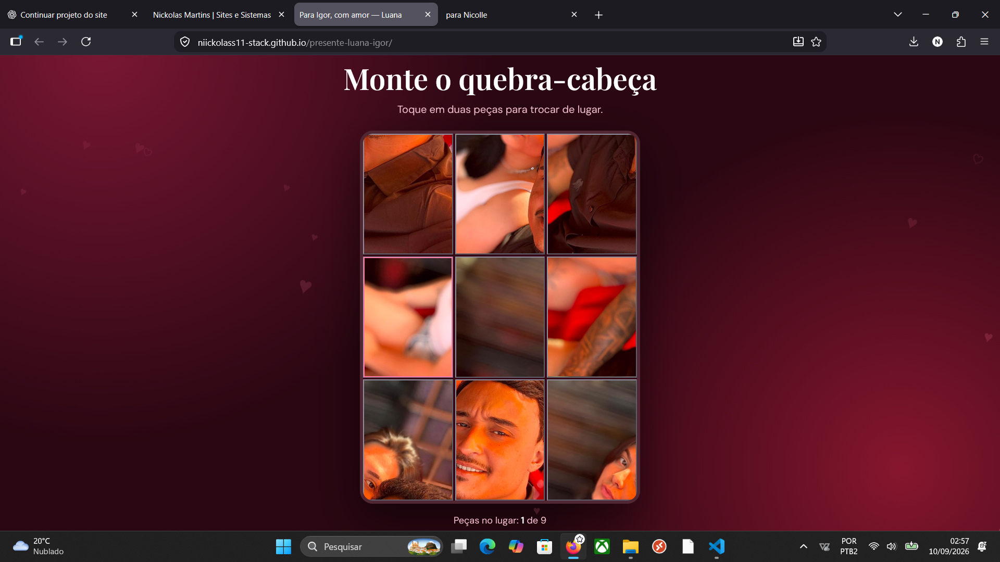
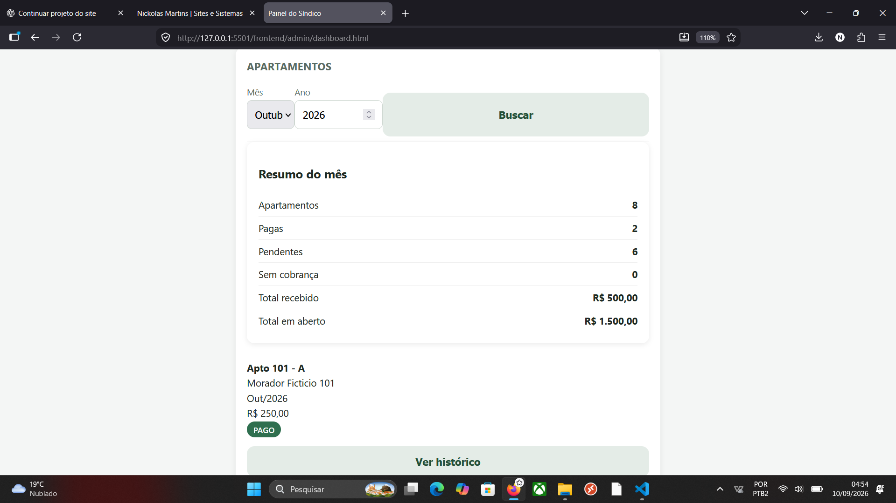

Sites para negocios
Sites responsivos para apresentar empresas, profissionais, produtos e serviços na internet.
NICKOLAS MARTINS. DESENVOLVEDOR
Crio sites personalizados, páginas para presentes e sistemas pensados para facilitar o dia a dia do seu negócio.
projeto: sua ideia
design: personalizado
telas: responsivas
resultado: transformar sua ideia em realidade
O QUE EU FAÇO
Sites responsivos para apresentar empresas, profissionais, produtos e serviços na internet.
Experiências com fotos, cartas, quebra-cabeças e animações escolhidas pelo cliente.
Soluções para organizar informações, cadastros, pagamentos e tarefas de forma mais simples.
TRABALHOS

Site personalizado com carta, fotos, animações e experiência adaptada para celular.

Experiência digital personalizada com cores, imagens, mensagem e quebra-cabeça interativo.
.png)
Sistema com cadastro, edição, exclusão e consulta de contatos conectado ao banco de dados.

Painel para organizar apartamentos, cobranças, pagamentos e histórico dos moradores.
QUEM DESENVOLVE
Sou estudante de Análise e Desenvolvimento de Sistemas e desenvolvedor em formação. Transformo meus conhecimentos em projetos reais, buscando criar soluções úteis, organizadas e fáceis de utilizar.
Tenho experiência com desenvolvimento de sites, Java, Spring Boot, Python e MySQL. Também desenvolvo projetos personalizados de acordo com as necessidades de cada cliente.
VAMOS CONVERSAR?
Explique o tipo de site ou sistema que você precisa. Conversaremos sobre o conteúdo, o visual e as funcionalidades antes de iniciar o desenvolvimento.